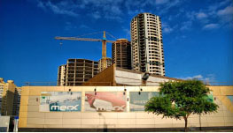
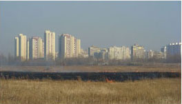
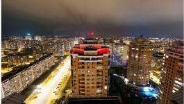

Батьківська спілка
2 квітня 2014 року
Незалежна координаційна спілка шкільних батьківських комітетів. Рішення питань контролю батьківських внесків на потреби школи та якісної роботи вчителів й адміністрації. Мінімізація репресивних ризиків для ...

Спілка підприємців
3 квітня 2014 року
Недержавна спілка підприємців по захисту малого та середнього бізнесу від корупційного свавілля та надмірного контролю з боку чиновників. Юридична та інформаційна підтримка бізнесменів, організація їх співпраці та спільних дій.

Позашкільне дитяче дозвілля
4 квітня 2014 року
Розвиваючі ігри для дітей. костюмовані казкові та фантастичні пригоди на природі. Фізичні, інтелектуальні та етичні випробування. Активне залучення батьків та інших бажаючих до організації заходів.
РДА Деснянського району
Наш сайт тісно співпрацює з Деснянською районною державною адміністрацією
Народна рада
Слідкуйте за новинами Народної ради Деснянського району та залишайте свої коментарі у соціальній мережі Facebook